Primera Generación: Kanto
Introducida en 1996, la primera generación presentó a 151 Pokémon, incluyendo a Pikachu, el icónico Pokémon de la franquicia. La región de Kanto es donde los entrenadores comenzaron su viaje.
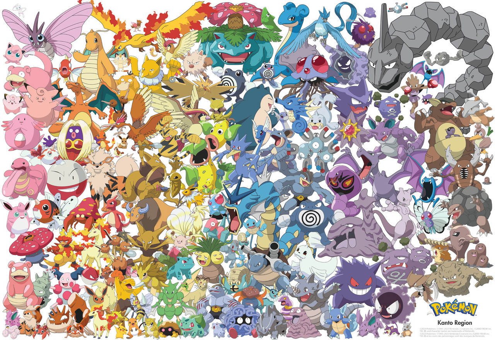
Segunda Generación: Johto
La segunda generación, lanzada en 1999, amplió el mundo con 100 nuevos Pokémon y añadió el sistema de día y noche, lo que permitió capturar Pokémon en diferentes momentos.
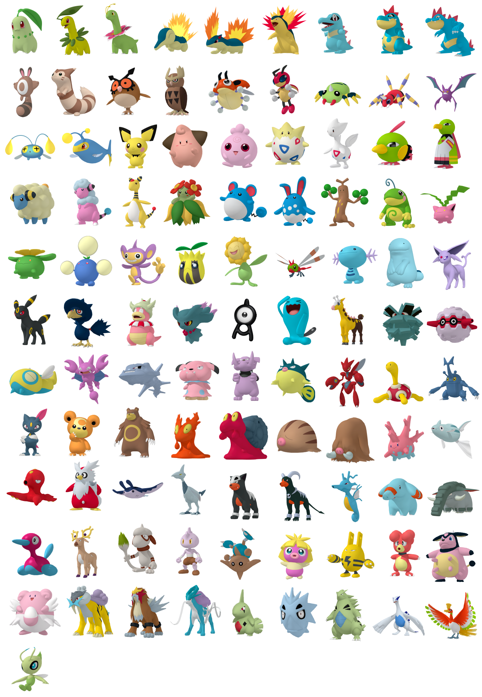 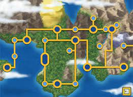Tercera Generación: Hoenn
Presentada en 2002, la tercera generación trajo 135 Pokémon y mejoró los gráficos, introduciendo la región de Hoenn y nuevas mecánicas de juego.
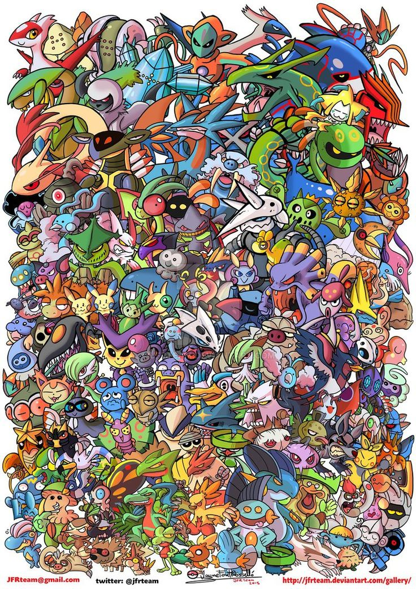 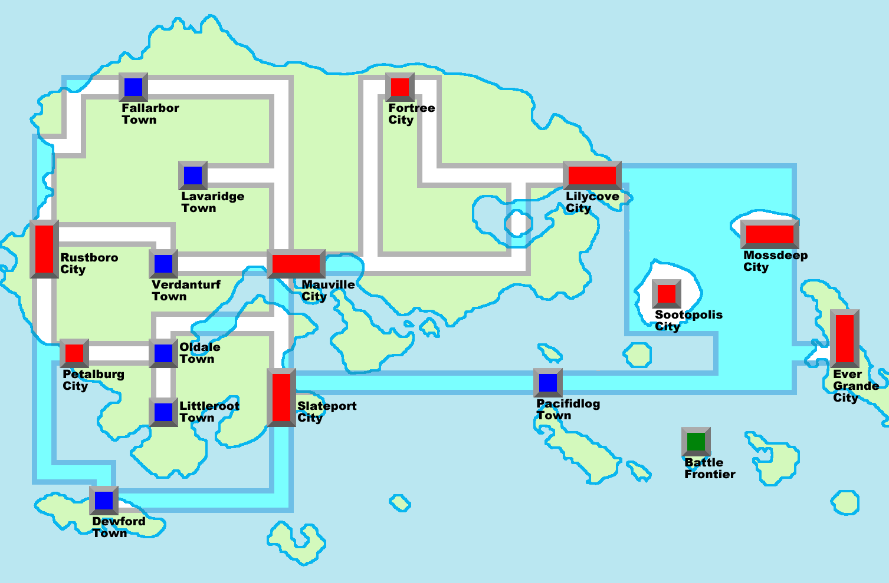Cuarta Generación: Sinnoh
La cuarta generación, que debutó en 2006, trajo 107 Pokémon y presentó las evoluciones de algunos Pokémon de generaciones anteriores, así como la mecánica de las evoluciones por amistad.
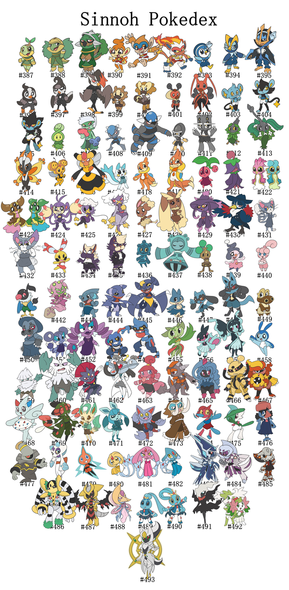 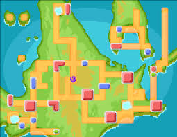Quinta Generación: Unova
Lanzada en 2010, la quinta generación incluyó 156 Pokémon y se centró en un diseño más diverso y dinámico, introduciendo una nueva historia y personajes.
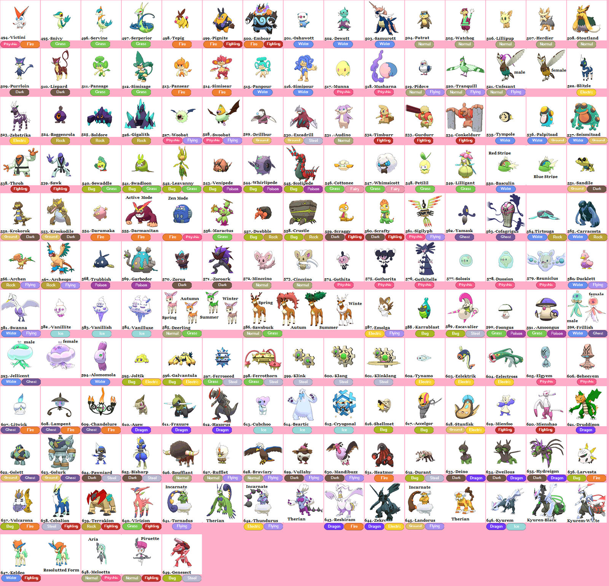 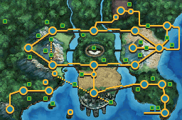Sexta Generación: Kalos
Introducida en 2013, la sexta generación presentó 72 nuevos Pokémon y trajo consigo la evolución Mega, que permite a ciertos Pokémon transformarse en formas más poderosas.
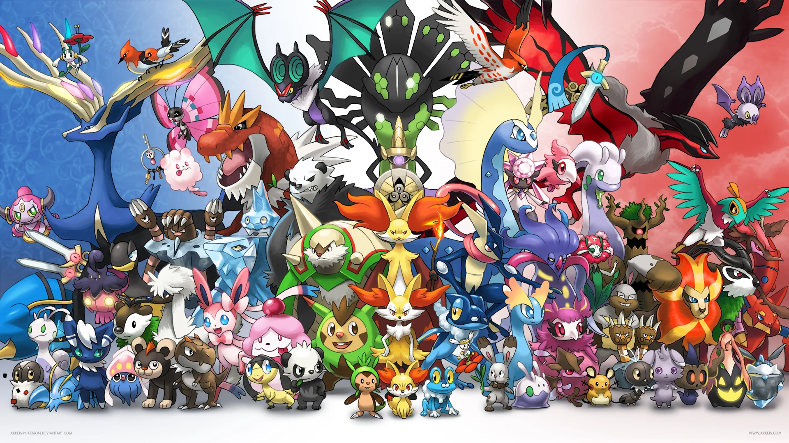 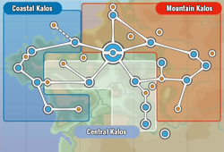Imágenes de las Generaciones
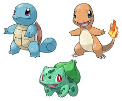